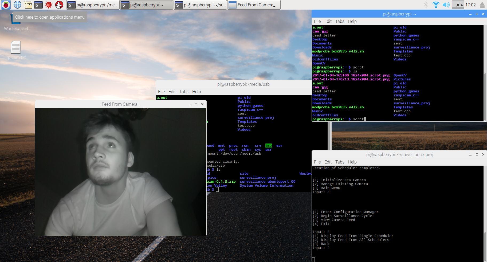
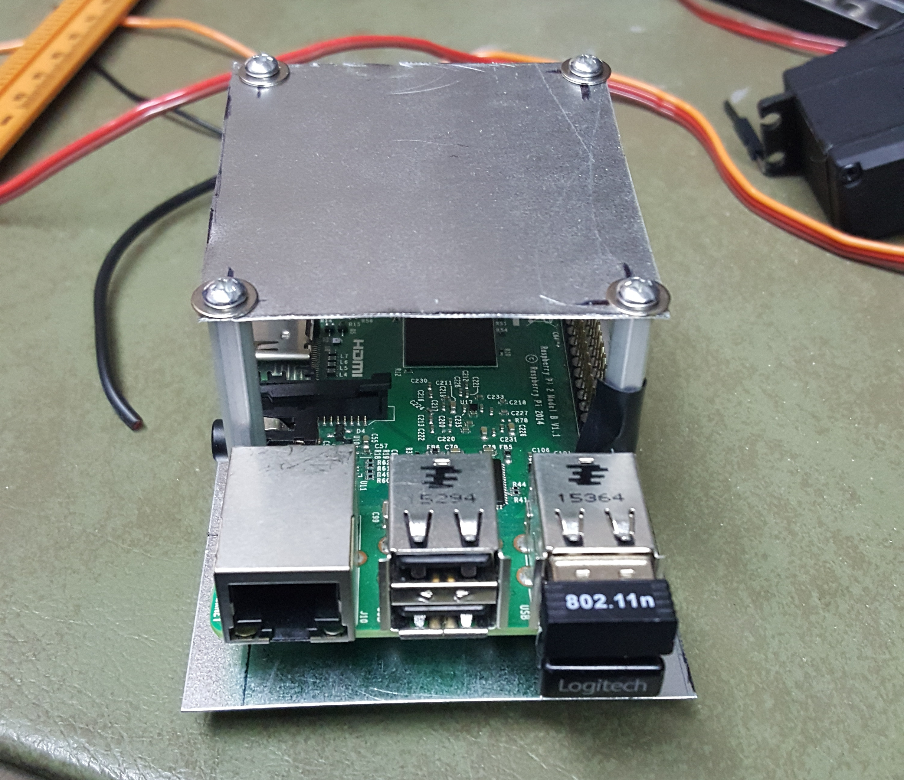
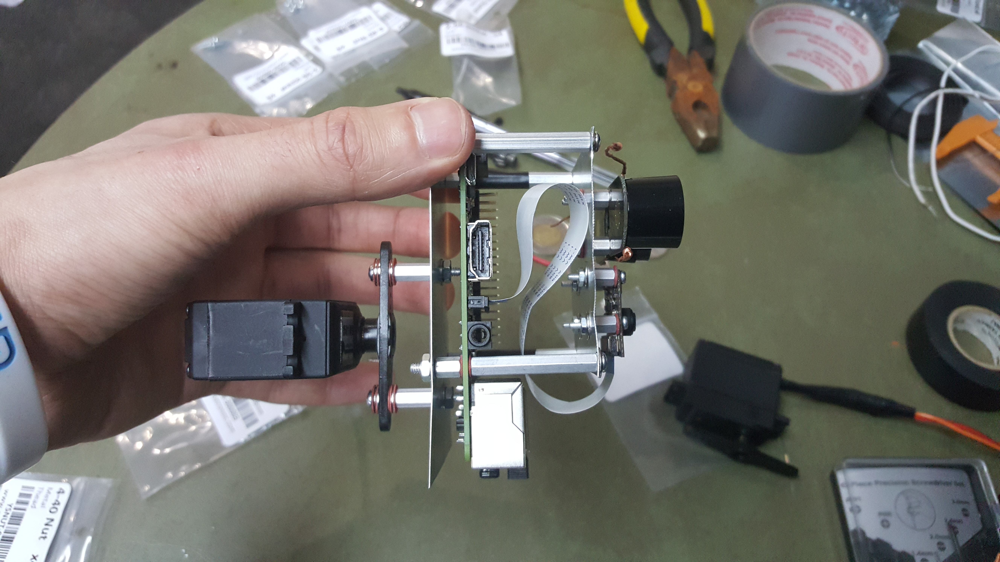
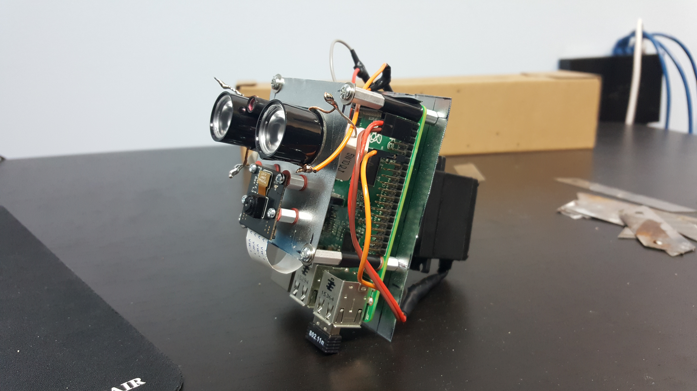

This project was about finding a challenging real-world problem and building everything needed to solve it effectively. The problem I chose was video surveillance. How do you effectively monitor a space for visual events without dedicating a person to the job? The obvious answer 15 years ago, was to point a camera at the space and record everything for later review. While effective, we can do a lot better today. Hardware and processing power costs have plummeted and there are open-source software libraries that solve extremely complex problems while only requiring a surface level understanding for use. My solution attempts to take advantage of these facts.
The hardware I started with was a Raspberry Pi Model B+, the Pi NoIR camera and two 1501MG Servos. These components and a few lines of code provided a few key things right away (processing power, some storage, high quality video feed and physical control of the system). This was a good start for a surveillance system and didn't cost too much (~$100 total). I didn't know it when I bought them but the 1501MG's were overkill for rotating a small camera and I could easily have spent $20 less and still had servos with enough torque. A few days later I had everything set up and knew how to use it well enough.
First on the list of useful features was image recognition. For most surveillance applications using the 'store everything' method, the majority of footage that gets saved is of no interest. Because high quality video eats up a lot of storage and manually reviewing it to find areas of interest wastes time, this method is no good. A simple solution to this is motion detection but this can produce a lot of false positives. The best solution is a system that actually knows what it's seeing in real time, allowing it to only store footage when it sees what it's looking for. The trade off for this is high processing power requirements and high complexity. The good news is that processing power is cheap (RPi B+) and that really smart people have put a lot of work into image processing libraries over the last 17 years (I'm talking about OpenCV).
Learning how to use OpenCV was one of the more time consuming processes in this build. After a couple weeks, I knew how to build and install the library and how to use some of the library functionality relevant to my build. I played around with a few detection methods (color, contour, etc) before finding some sample code that uses Haar Cascades to identify objects. The only input required by the sample code was the path to an XML file. I discovered that the XML files are generated by a neural net that gets trained on a data set for a particular object. This was perfect because it allowed the use of a single function whose input only requires changing a single variable to change the type of object you're scanning for. OpenCV even provides the neural nets for training and producing new XML files. The code required a bit of modification but I had learned enough about OpenCV that it wasn't too bad. After all that I had a program where I could change what object I was searching for at runtime and then enter a 'surveillance cycle' that would grab a frame, scan it and then return true/false based on what it found. Very powerful and very easy to use, great!
The next thing I tried to add didn't work out so well. The original architecture I had planned was to have the Pi capture a frame and then send it over the network to a server where the image recognition would be running. At this point I hadn't figured out how to send the frames (intact) over the network. This meant the camera and image recognition code were running on a laptop and the servos running on the Pi. My great idea was to take the (x,y) pixel coordinates from an image detection, send those coordinates over the network to the Pi and then do some math to translate them into inputs for the servos that would cause the camera to move and center the image that was detected. After a couple days of learning how to set up a UDP client/server and use Named Pipes, I had the coordinates streaming to the Pi at a good refresh rate (Around 20 position updates per second). After working out a function that did an approximate job at turning the frame's (x,y) coordinates into servo inputs to center the image, it was time to test. Two problems became immediately apparent. The first was that the servos did not have the control resolution for precise movements. The second arose from using WiringPi to turn a digital signal from the GPIO pins on the Pi into a PWM signal. True PWM is meant to be done with an analog signal and faking it with digital pins causes a lot of stuttering. This stuttering gets A LOT worse when the Pi's CPU is working hard as it interferes with the signal going to the GPIO pins. The result was a targeting system that barely worked and shook violently whenever the Pi was doing something. It looked pretty funny but I decided to scrap the idea and move on.
Moving forward I thought it would be best to focus on practical features. I came up with the idea for an event scheduling system. Something that would allow users to specify a time and have the system automatically execute arbitrary behavior at that time. This can be broken down into two components, an event creation system and a scheduler. I thought the event creation system could be well abstracted using some of the Object-Oriented features of C++. I wrote an abstract class named Event with a constructor that took in all the information any arbitrary event would need (execution deadline, event name, etc.). A virtual function (execute_event()) in Event would ensure that all event types used a common interface to execute their behavior. This model abstracted away most of the work and complexity of implementing new event types. Simply write a new class that inherits from Event, write a constructor for the new class (the initializer list makes sure none of the basic information needed for an Event object is missed) and then write the behavior for the new event in execute_event(). Because the event creation system was set up nicely, writing the scheduler wasn’t hard. It took a tiny bit of math and some STL functionality. Because C++ allows “childClass” type pointers to be assigned to “parentClass” type pointers, an STL list of Event pointers allowed the insertion of any event type inheriting from Event. The Scheduler class only needed to facilitate two things. First was the insertion of new Event pointers into the right location in the list based on the execution deadline of the event pointed to by that pointer. Second was to periodically poll the last event in the list to check if it’s overdue. If the poll finds an overdue event it calls the event’s execute_event() function and then discards it from the list. Using OpenCV and this new scheduling system I added Video and Photo events, allowing users to schedule a time to record a video or take a photo.
The last major software component the system needed was a way to respond to different types of image detection (I left color, contour and Haar Cascade detection in and can configure the image_processor module to use any combination of those). I wrote a response module that would take a signal from each active image detection method and execute a different response for each positive detection. The most practical response I implemented was to package the frame as a .jpg when a positive detection signal was received and then email the .jpg with relevant contextual information to a preset address. This system was also set up to be easy to work with so any future system responses will be easy to incorporate.
After completing all the major components, I spent some time cleaning things up and packaging everything in a way that would allow an arbitrary number of cameras to be easily connected to the system (Each with their own response_module, image_processor and event_scheduler to allow different configurations for each camera). Wrapping around all that, I wrote a configuration manager that handles initialization and configuration for all the cameras and their components through an easy to use CLI. Since it’s a CLI, everything is easy to use remotely with an SSH client. The software is done and (mostly) working correctly! Time to move on to hardware.
Connecting and packaging all the hardware was a bit out of my comfort zone (which is happily programming in a dark room with headphones and coffee) but the hardware was simple enough that this was a good first time electronics project. To help with the case design and assembly I enlisted my longtime friend Chris Stirpe (Chris tests and assembles jet engines for a living so this was a walk in the park for him). We needed to wire up the servos and two high-power infrared LED’s to an external power supply, attach the servo control lines to the Pi and build a frame to secure everything to. Chris came over for a weekend that started with a long trip to the closest electronics store (Toronto) and then Home Depot. When we got back we grabbed drinks, turned on some music and got to work. My job was to sort out all the electrical stuff. I spent the first couple hours cutting, splicing and soldering wires to make the right connections and sizes we needed. After that I attached resistors to our LED’s (My first time using Ohm’s Law and W=V*A in real life. My first-year physics prof would be proud). Now everything was in one piece and ready to wire up all our components. While I did that, Chris took measurements and designed the frame and case. After a couple hours, he got to work cutting out stainless steel plates for the frame and drilling holes where the posts would go to attach everything. Once we both had our pieces ready we assembled everything and tested it. When we determined that everything was working we bolted and soldered it all down.
  The hardware phase only took two days with Chris’ help but I learned a lot of practical stuff and it was the most fun I had through the entire project. Chilling with friends while you listen to music and build cool stuff is definitely one of my favorite things to do. We didn’t quite get to finish off the build because the camera still needs a case to go around the frame (Several people have told me it looks like WALL-E in its current state). I’ve obtained a copy of CAD Inventor so when we both have time I’ll be visiting Chris so he can draw up a model and then we’ll take it somewhere to 3D-print. The goal is a less childish-cartoon-robot aesthetic and weather proofing so it can be mounted outdoors. My next semester of class is quickly approaching so the case may have to wait a few weeks but I’ll update this post with pictures when I have a final product.
------------------------------------------------------------------------------------------------------------------------------------------------------------------------------------------------------------------------------------------
I've never learned more from a project or had as much fun building something. I'll definitely be doing more builds like this one and using what I learned to try and make something even cooler.